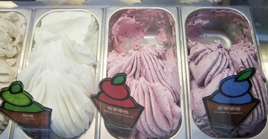
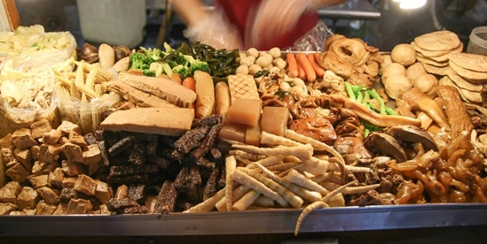

瑞豐夜市
瑞豐夜市位於高雄市左營區裕誠路和南屏路段(三民家商附近)，夜市佔地近千坪，且擁有20年的歷史，規模從最初無秩序的路邊擺攤到目前以特殊『Ｌ』型字母的集中管理擺攤，可說是高雄規模最大且管理最優的夜市，瑞豐夜市目前擺設攤位超過1000個攤位，每個攤位所販賣的東西更是五花八門，包括小吃、服飾、流行飾品及各項娛樂攤位等等，已成為高雄市區民眾夜晚品嚐小吃、宵夜的聚集地。
瑞豐夜市有許多的小吃，甚至還有許多店家是20年的歷史，各家各有其獨家的特色及口味，例如萬國鐵板麵、蒙古烤肉、沙嗲烤肉、上海香酥雞、古早味青草茶、日式麻辣黃金魚蛋、烤鴨夾餅號懶人蝦、麵線羹、傳統杏仁茶與粉圓、有特殊香味肉燥的狀元糕、真材實料的木瓜牛奶等等令人垂涎欲滴的美味小吃，而且都是饕客來此必定光顧的美味。
咔啾義式手工冰淇淋
經典義式手工冰淇淋，消暑必吃的散步美食，
用擁擠熱鬧的瑞豐夜市，還能吃到濃郁的冰淇淋，還有多款季節限定的水果冰淇淋，夠酸夠味
使用厚本食材製作，每一口都是濃郁滋味，
冰淇淋的餅乾也是手工製作，酥脆帶有奶香味道，
飯後可以搭配手工布朗尼冰淇淋，一次滿足味蕾，瑞豐夜市必吃消暑冰品。
櫥窗滷味
南部最夯的木櫥窗滷味，帶有古早味的特色，
檯面滿滿的經典滷味、小菜任均挑選，帶有南部甜味，
用塑膠袋裝，可以邊走邊吃逛夜市，瑞豐夜市超夯必吃的櫥窗滷味，
常溫的滷味，別於一般加熱過的風味，還有清脆蔬菜搭上胡椒鹽就好吃。
如果吃辣，可以加上店家特製辣椒醬。
泰式月亮蝦餅

常現炸好的泰式月亮蝦餅，淋上泰式蝦醬，
酸又清爽的泰式醬，帶有甜度，薄博的外皮，咬下發出的清脆聲響
滿滿的鮮甜的蝦醬，略帶一絲甜味，一點Q彈
酥脆好吃不油膩，最外圍一圈略硬的餅皮帶來更有層次的口感。